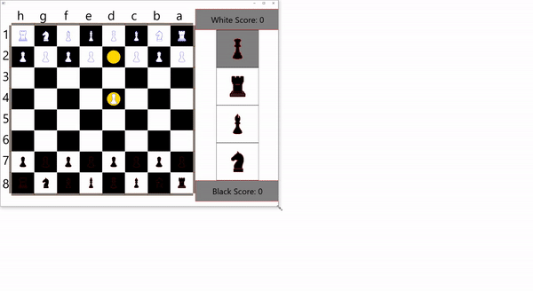
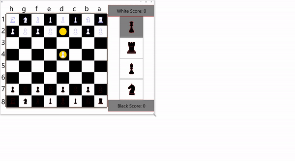

Tank game made in Java using JavaFX. The game can be one player or two players. The map is a 10x10 square with randomly generated walls and equidistant powerup location. Using Dijkstra's algorithm, an AI is able to play in one player mode. A tank must hit its enemy tank with a bullet to win